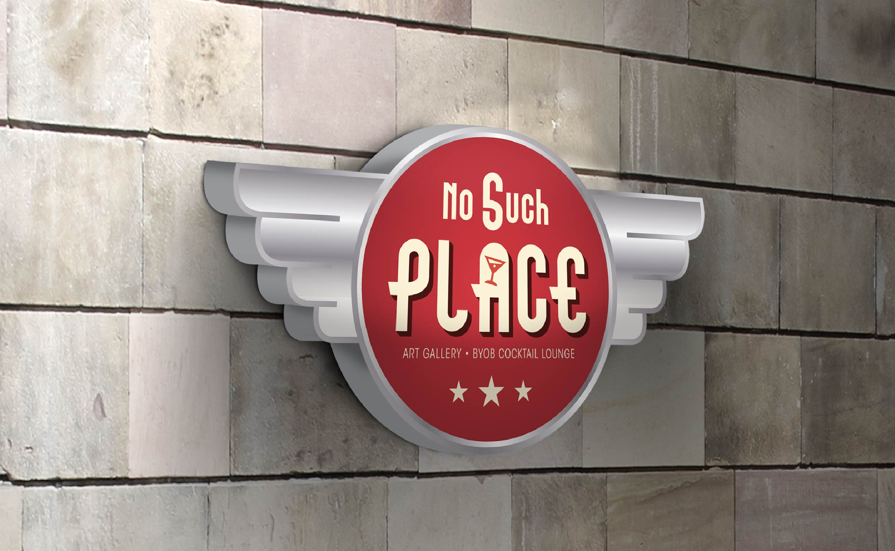
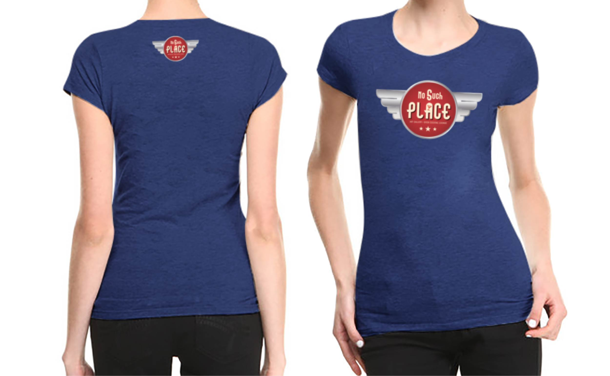
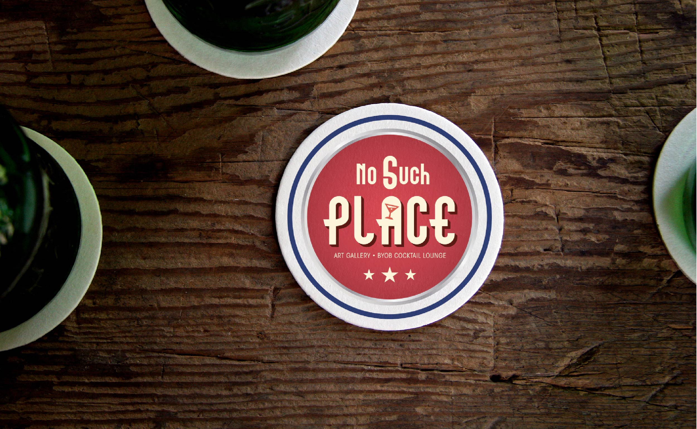

This is a concept for a new cocktail space: No Such Place. The bar is a 50s style space, an art gallery and a business travel lounge. I wanted to try coming up with a retro emblems on the aviation theme and with colours and elements of the US vintage flag. I used a martini’s glass icon as the focal point in the “A” letter in the PLACE word to represent the lounge cocktail bar nature of this space.
  